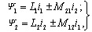
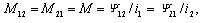

В индуктивных катушках без ферромагнитных сердечников магнитные потоки и потокосцепления самоиндукции и взаимоиндукции пропорциональны вызвавшим их токам, т. е.

(3.94)

(3.95)
где М - взаимная индуктивность индуктивно связанных катушек.
Численно величина М равна отношению потокосцепления взаимной индукции к значению вызвавшего его тока. Взаимную индуктивность М выражают в генри (Гн).